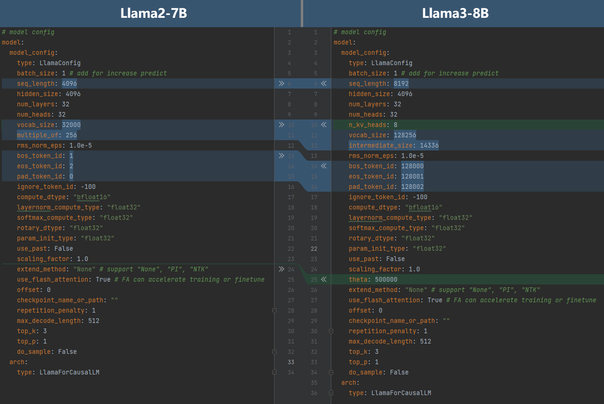

已废弃（Deprecated）
本页属于 静态图（GRAPH_MODE）实现 章节，已标记为废弃。新特性优先在「r2.0.0 动态图实现」章节演进，请优先查阅动态图相关文档。
开发迁移

本文档将指导用户如何基于MindSpore Transformers构建一个大模型，并完成最基本的适配，以拉起训练和推理流程。
基于MindSpore Transformers构建大模型
MindSpore Transformers中大模型的基本组成包含配置、模型、分词器（适用于大语言模型）。此外，为了使用run_mindformer.py统一脚本拉起训练或推理流程，还需要准备用于训练或推理的YAML配置文件。
编写配置
模型配置是一个实例，包含模型的所有信息。MindSpore Transformers中所有模型的__init__方法都接收一个模型配置的实例作为入参，模型的所有子模块都通过这个配置实例中所包含的信息来初始化。
MindSpore Transformers提供了PretrainedConfig类，负责提供一些配置的通用方法。所有模型的配置类都应该继承于PretrainedConfig类，开发者只需关心定义所有帮助构建大模型的配置参数：Transformer类大模型通常拥有seq_length、hidden_size、num_layers、num_heads等配置参数，文本类的大模型通常还有vocab_size等。
可以参考MindSpore Transformers中Llama模型的配置类LlamaConfig。
如果您的模型与库内的模型非常相似，可以复用与该模型相同的配置。
编写模型
MindSpore Transformers的大模型基于MindSpore框架进行开发，其中开发者只需要关心模型网络本身的实现。
MindSpore Transformers提供了PreTrainedModel类，负责存储模型配置并处理加载、保存模型的方法。所有模型的类都应该继承于PreTrainedModel类，并且模型的输入应该是统一的，即模型的construct方法的入参应该一致，具体入参和含义可以参考MindSpore Transformers中的Llama模型类LlamaForCausalLM。同时，模型类必须实现基类的一些抽象方法，包括：
prepare_inputs_for_generation：为模型推理构建输入的方法。prepare_inputs_for_predict_layout：为分布式加载模型权重构建虚拟输入的方法。
关于它们的具体含义，可以参考LlamaForCausalLM中的描述。
如果您的模型结构与库内的模型非常相似，可以复用该模型的实现。
编写分词器（适用于大语言模型）
分词器（Tokenizer）的作用是处理大语言模型的输入与输出。它在大语言模型的工作流程中是必需的。
MindSpore Transformers提供了PreTrainedTokenizer类和PreTrainedTokenizerFast类，分别是纯Python的实现和使用Rust库的实现。后者实现的区别是：
在进行批量处理时速度显著提高；
额外包含一些在文本字符串和词元空间映射的方法（例如，获取包含给定字符的词元的索引或与给定词元相对应的字符跨度）
所有分词器的类应该继承于PreTrainedTokenizer类或PreTrainedTokenizerFast类，具体实现可以参考LlamaTokenizer和LlamaTokenizerFast。
如果您的分词器与库内的分词器非常相似，可以复用该分词器的实现。
准备权重和数据集
如已有基于PyTorch的模型权重，可以参考权重转换文档将权重转换为MindSpore格式的权重。
数据集的准备可以参考数据集文档。
准备YAML配置文件
MindSpore Transformers使用YAML配置文件配置一个任务所需的所有参数，包括模型的配置参数、训练所需的配置参数（优化器、学习率、数据集等）、推理所需的配置参数（分词器等）、分布式并行的配置参数、上下文环境的配置参数等。
由于自定义模型的代码不在MindSpore Transformers库内，代码中的自定义模块没有注册在MindSpore Transformers中，因而不能被自动实例化。这些代码也称为外挂代码（如research目录下代码）。因此需要在编写的YAML配置文件中的对应模块配置下添加自动注册任意模块的配置项auto_register，设置为要注册的API接口的相对导入路径。后续在执行run_mindformer.py脚本拉起任务时添加注册路径的入参--register_path，设置为外挂代码所在目录的相对路径。
例如，research目录下的Llama3.1-8B模型的推理YAML配置文件research/llama3_1/predict_llama3_1_8b.yaml中，添加了自动注册的配置项auto_register，以注册research/llama3_1/llama3_1_tokenizer.py中自定义的Llama3Tokenizer：
...
processor:
return_tensors: ms
tokenizer:
model_max_length: 8192
vocab_file: "/path/tokenizer.model"
pad_token: "<|reserved_special_token_0|>"
type: Llama3Tokenizer
auto_register: llama3_1_tokenizer.Llama3Tokenizer
type: LlamaProcessor
...
其中在tokenizer下配置了Llama3Tokenizer的相对导入路径auto_register: llama3_1_tokenizer.Llama3Tokenizer。
另外，需要在tokenizer下设置vocab_file为模型分词器tokenizer.model的真实路径。
可以运行如下命令拉起推理任务：
python run_mindformer.py --config research/llama3_1/predict_llama3_1_8b.yaml --load_checkpoint path/to/llama3_1_8b.ckpt --register_path research/llama3_1 --predict_data "hello"
参数说明
参数 |
说明 |
|---|---|
config |
|
load_checkpoint |
加载的权重路径 |
register_path |
外挂代码所在目录的路径 |
predict_data |
推理的输入数据 |
其中设置了register_path为外挂代码所在目录的路径research/llama3_1，模型权重的准备参考Llama3.1说明文档——模型权重下载。
配置文件的详细内容及可配置项可以参考配置文件说明。在实际编写配置文件时，也可以参考库内已有的配置文件，例如Llama3_1-8B微调的配置文件。
在准备完上述所有基本要素之后，可以参考MindSpore Transformers使用教程中的其余文档进行模型训练、微调、推理等流程的实践。后续模型调试调优可以参考大模型精度调优指南和大模型性能调优指南。
将模型贡献给MindSpore Transformers开源仓库
可以参考MindSpore Transformers贡献指南，将模型贡献到MindSpore Transformers的开源仓库，供广大开发者研究和使用。
MindSpore Transformers大模型迁移实践
基于Llama2-7B迁移Llama3-8B
Llama3-8B与Llama2-7B拥有相同的模型结构，只有部分模型参数、分词器和权重不同。
模型配置
以下对比了Llama2-7B和Llama3-8B的模型配置：

其中的区别有：
Llama3-8B的序列长度为8192，将
seq_length修改为8192。Llama3-8B使用GQA，每个key-value组的head数量为8，设置
n_kv_head为8。Llama3-8B的词表大小为128256，将
vocab_size修改为128256。Llama3-8B扩充了Feed-Forward Network的隐藏层大小至14336，设置
intermediate_size为14336。Llama3-8B修改了特殊词元索引，修改
bos_token_id为128000、eos_token_id为128001、pad_token_id为128002。Llama3-8B修改了旋转位置编码中的theta值为500000，修改
theta为500000。
修改Llama2-7B的YAML配置文件中的对应内容即可得到Llama3-8B的配置文件。
分词器
Llama3-8B重新实现了分词器。对照官方的实现，继承MindSpore Transformers中的PreTrainedTokenizer实现Llama3Tokenizer。
权重转换
Llama3-8B的参数命名和Llama2-7B一致，因此可以复用Llama2-7B的权重转换流程。
数据集处理
由于Llama3-8B的分词器与Llama2-7B不同，因此Llama3-8B需要在Llama2-7B的数据集处理脚本的基础上，替换Llama3-8B的分词器对数据进行预处理。